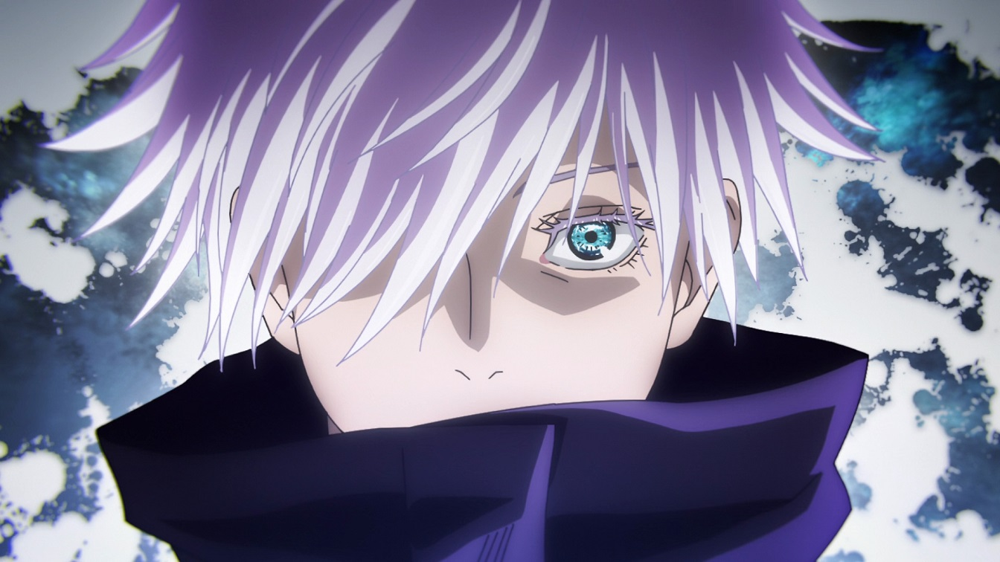

Ano promete continuações e novidades fortíssimas, então é melhor se organizar para assistir tudo

O ano de 2023 promete grandes novidades para os fãs de animes desde seus primeiros dias. Assistir todas as principais produções, no entanto, pode ser complicado caso falte planejamento.
Nessa indústria, há quatro temporadas de lançamentos no ano, e os próximos 12 meses comprometem-se a entregar uma explosão de títulos aguardados pelo público. Além de animes famosos, que receberão novas temporadas, também há fortes novidades saindo do forno.
Bungo Stray Dogs finalmente ganhou sua quarta temporada em 4 de janeiro de 2023. A animação continua sendo produzida pelo estúdio BONES, de Fullmetal Alchemist: Brotherhood e My Hero Academia. Nos novos episódios, um mês se passou desde que a Agência de Detetives Armados e a Máfia do Porto se uniram para acabar a operação dos Ratos da Casa da Morte. Em uma nova missão, os detetives precisam evitar um assassinato, mas caem em uma grande cilada, armada por Fyodor.
As temporadas anteriores de Bungo Stray Dogs podem ser vistas pela Crunchyroll. Além disso, a estreia da 5ª temporada do anime está confirmada para 12 de julho de 2023
No início do ano, os gamers-otakus receberam o anime NieR:Automata Ver1.1a, baseado no game de 2017 desenvolvido pela PlatinumGames e distribuído pela Square Enix. O estúdio A-1 Pictures é responsável pela adaptação. Em uma Terra desolada e dominada por máquinas alienígenas, o espectador acompanha, principalmente, os androides 2B e 9S em uma guerra sem fim.
NieR:Automata Ver 1.1a sofreu bastante com adiamentos desde sua estreia, devido à Covid-19. O episódio 4, por exemplo, foi prorrogado de 28 de janeiro para 18 de fevereiro. A conclusão do anime (capítulos 9 – 12), por sua vez, chegará ao público em 23 de julho. O jogo NieR:Automata está disponível para PC, PlayStation 4 e Xbox One.
Mesmo com sua simbologia polêmica no ocidente, Tokyo Revengers se tornou um grande sucesso. Sua segunda temporada era muito esperada, chegando em 7 de janeiro, no Japão. A sequência da animação adapta o Arco da Dragões Negros (Black Dragons) e o Confronto da Noite de Natal (Seiya Kessen). Entre os personagens estreantes ou melhor desenvolvidos, estão Hakkai, Yuzuha e Taiju Shiba, Seishu Inui e Hajime Kokonoi. Além disso, a história começa a mostrar a queda de Mikey para a escuridão, e Takemichi se tornando um protagonista cada vez mais corajoso..
A primeira temporada de Tokyo Revengers pode ser assistida pela Crunchyroll. Curiosamente, a Disney adquiriu os direitos da sequência do anime, que chegou ao Brasil pelo Star+ (com atraso).
Outra produção que surpreendeu tanto o público quanto a crítica foi Vinland Saga, que ganhou uma 2ª temporada em 9 de janeiro de 2023. O anime se baseia em muitos eventos históricos e figuras nórdicas/inglesas. O estúdio MAPPA assumiu a produção do anime (antes era o WIT), mas a equipe ainda é a mesma. A sequência adapta o Arco da Escravidão (Slave Arc) do mangá — também conhecido como Farm Arc ou Ketil’s Farm Arc. Nessa parte da história, o espectador acompanha um momento importante do desenvolvimento de Thorfinn, em eventos, talvez, menos violentos. Confira a sinopse oficial abaixo: “Um novo milênio começa na região sul da península Jutland, na Dinamarca. Após a morte de Askeladd, seu inimigo de longa data, Thorfinn perdeu seu sentido de vida. Ele é comprado como escravo por Ketil, um latifundiário, e passa a trabalhar nas terras de suas propriedades. Lá, Thorfinn conhece Einar, um jovem que era um escravo como ele. O encontro com Einar força Thorfinn a encarar os pecados que cometeu e a buscar sentido em sua vida. Esta é a saga de um verdadeiro guerreiro – uma saga de redenção e salvação que se sucede ao prólogo”.
A 2ª temporada de Vinland Saga foi transmitida em duas partes, lançadas em janeiro e abril. Todo o anime está disponível na Crunchyroll e na Netflix.
Para os amantes do horror, 2023 pode ser considerado um presente, pois Junji Ito: Histórias Macabras do Japão chegou ao catálogo da Netflix em 19 de janeiro. Junji Ito: Histórias Macabras do Japão sofre com temporada irregular | Crítica O anime adapta 20 histórias do autor de Tomie, em formato de antologia. Alguns dos títulos presentes nesse projeto são: Souichi; Balões Enforcadores; The Long Hair in the Attic (O Cabelo Comprido no Sótão); Library of Illusions (Biblioteca de Ilusões); The Bully (A Valentona); Den of the Sleep Demon (O Covil do Demônio do Sono); Unendurable Maze (Labirinto Insuportável).
A animação ficou nas mãos do estúdio DEEN, conhecido por animes como Fate/stay night, The Seven Deadly Sins e Junji Ito Collection. A direção e o design de personagens são assinados por Shinobu Tagashira (Hunter x Hunter).